Blobfish Win Thrilling
Cork Bowl 21 133-126 Over the Red Pandas as Trimble is Stopped
at the 1 Yard Line on Game's Final Play; Willy Truitt Wins MVP
Going 45-for-69 With 19 Touchdowns and 0 Interceptions; Robert
Trimble Ties Single-Game Record With 10 Touchdowns on 21 Receptions;
Jake Hoalt and Patrick Cork Combine For 14 Touchdowns in Victory
Click
Here for Stats
(Click
Here for More Pictures! (thanks
to Joe Trimble and Jess Trimble)
Saturday, December 3rd- In 21
years of Cork Bowl, no game has ended with the type of drama that
took place on Saturday afternoon at Corklestick Park. In one of
the most evenly contested games in history, the largest lead of
the game was 14 points - and lasted all of two minutes early in
the third quarter. The game was tied 17 different times, and after
playing 99 minutes and 57 seconds, the Red Pandas needed one more
score to send the game to the first ever Cork Bowl overtime. With
the Blobfish clinging to a 133-126 lead, the Red Pandas were 30
yards away from the endzone with 3 seconds to go. Everyone knew
the ball would go to Red Pandas receiver Robert Trimble, who had
put up one of the best individual performances in the game's history.
Greg Howard completed a short pass to Trimble who shook off a pair
of defenders and raced toward the endzone. Much like Super Bowl
34, the last play will forever be remembered as "The Tackle"
as Patrick Cork dove at Trimble's legs tripping him up at the one
yard line to end the game - and set off a wild celebration near
midfield by the Blobfish.
"For 20 years I've dreamed
of catching a touchdown pass as the clock ran out to end a Cork
Bowl," remarked Patrick Cork. "But to be perfectly honest,
never in a million years did I expect to finish a game with a defensive
play. Trimble was a beast all day. Earlier in the game I tried to
take out his legs and took a wicked knee to the hip, but the only
thing I could think of was how badly I didn't want to play overtime.
The last thing I wanted to do after playing 100 minutes of football
was to keep playing."
"I've not been around for
all the Cork Bowls, but I can't imagine a game ending in more exciting
fashion," commented announcer Mike Miller. "My call of
the last play was pure emotions - I channelled my inner Gus Johnson.
When I saw Trimble go down at the one yard line, I said the only
thing I could think of - "Heartbreak City!"
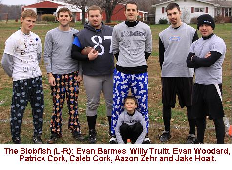 A
beautiful 50 degree day was the setting for the game, and both teams
took advantage of the ideal conditions in a high-scoring, back-and-forth
first quarter of play. The Blobfish started with the ball and put
up a quick score on back to back completions from Willy Truitt to
Patrick Cork and Jake Hoalt with Hoalt scoring from 10 yards out
for the 20th touchdown of his career. The Red Pandas responded with
Greg Howard hooking up with Robert Trimble for the first of his
record-tying 10 touchdowns to tie the game at 7. Another touchdown
each from Hoalt and Trimble moved the score to 14-14 and Patrick
Cork and Chris Cork exchanged touchdowns on the next two series
to bring the score to 21-21 with seven minutes to play in the first
period. Truitt hit Patrick for a 19 yard score for a 28-21 lead,
but the Red Pandas answered immediately with a 38 yard, tackle-breaking
score from Robert Trimble to knot the game at 28-28 (VIDEO).
Truitt hit Hoalt on a bomb on the next play (35-28) (VIDEO),
but once again the Red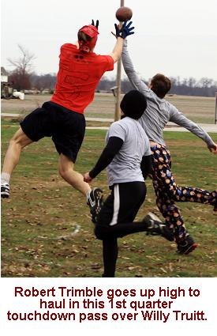
Pandas answered with a length-of-the-field score of their own to
Chris Cork to tie the game at 35-35 (VIDEO).
Over a three minute stretch, the teams combined to complete six
passes for five touchdowns as the quarter wound down. The first
pressure situation of the game came on the next drive as the Blobfish
were faced with a fourth and goal from the two yard line. Truitt
was able to hit Patrick Cork on a short touchdown to close the first
quarter with the Blobfish in the lead 42-35.
After playing receiver last
year, Cork Bowl's all-time leading passer Willy Truitt showed no
signs of rust hitting on 14 of his 18 passes in the quarter for
6 touchdowns. After a dropped pass on the first play of the game,
Truitt connected on 12 of his next 13 passes and was only blitzed
one time late in the quarter. "I thought they might put a little
pressure on me and make me move around in the pocket," said
Truitt. "But they let me sit back and find the open man. I
felt good about our chances to score every time we touched the ball.
We had two guys I hadn't thrown to much, in Barmes and Zehr, so
we just took it nice and slow with them. I hit them both on some
easy balls, then challenged them a little with some zingers at tough
angles, they both reeled them in. That is when my confidence really
went up. I felt great at that point."
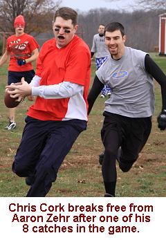 Greg
Howard, playing his second year in a row at quarterback, was sharp
as well connecting on 10-of-13 passes for 5 touchdowns. "Last
year I started out pretty rough so it was important to come out
and not turn the ball over early." Patrick Cork led all receivers
with 6 catches in the quarter including 3 touchdowns. Jake Hoalt
added four catches and 3 scores for the Blobfish. Robert Trimble
hauled in 5 first quarter passes and scored three times while Chris
Cork turned both of his catches into touchdowns.
The Red Pandas started the second
quarter off with a five-play touchdown drive capped off by a 2-yard
score to Chris Cork to tie the game at 42-42. The Blobfish, working
with a no-huddle offense for much of the game, responded with a
quick, two play drive with Willy Truitt finding Evan Woodard in
the flat and Woodard broke a pair of tackles to get into the endzone
for his first score of the game giving the Blobfish a 49-42 lead
(VIDEO).
The completion to Woodard was the 500th of Truitt's illustrious
career. As would be the case for the rest of the game, the Red Pandas
ran a significant amount of time off the clock on the next possession
with an 8 play drive that took nearly 8 minutes off the clock. They
converted a pair of fourth downs on the drive capped off by a one-yard
touchdown run from Greg Howard. The Blobfish decided to blitz at
the goal line and Howard was able to score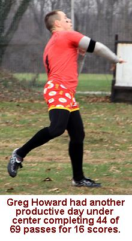
easily around the right end to tie game at 49-49.
The game's first turnover followed
on the next play as Evan Barmes took a short pass and advanced it
near midfield before being stripped of the ball by Chris Cork. Cork
not only forced the fumble, but also fell on it inside Blobfish
territory. After a pair of incompletions, the Blobfish decided to
blitz Howard again, but he was able to shake off an Aaron Zehr tackle
in the backfield and find the endzone for a 15-yard rushing score
to give the Red Pandas their first lead of the game at 56-49 (VIDEO).
The only lead of the game for the Red Pandas didn't last long (2
minutes) as Truitt marched the Blobfish back down the field with
three straight completions including a six-yard score to Hoalt to
knot the game at 56-56. After a completion to Trimble moved the
ball to midfield, Howard tried to hit Wilson in the back of the
endzone, but Wilson slipped to the ground on his cut and Patrick
Cork took advantage with an easy interception in the endzone for
a touchback. The interception was Cork's 13th of his career tying
him with Reggie Truitt for the all-time lead. Cork turned the turnover
into quick points as he tiptoed the sideline for a 32-yard score
on a third-and-long play to put the Blobfish back on top at 63-56
(VIDEO).
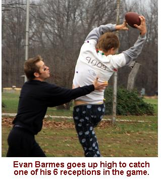 Much
like the end of the first quarter, the second quarter ended with
a flurry of activity in the closing minutes. Trimble took the first
pass of the next drive the length of the field for a score to tie
the game at 63-63 with just under a minute to play in the half.
After a short completion to Woodard, Truitt found Aaron Zehr behind
the defense for a 32-yard score with under 30 seconds to play to
put the Blobfish back up 70-63. With the Blobfish switching to a
zone defense, Chris Cork found an opening in the deep middle and
snuck through unguarded into the secondary. After catching the pass,
Cork ran off several seconds before entering the endzone to tie
the game at 70-70 with just 12 seconds to play in the half (VIDEO).
The touchdown was the 70th of Cork's 21 year career. Instead of
looking for two plays to get a score, the Blobfish went for it all
on the first play as Truitt hit Zehr in the back of the endzone
on a long touchdown pass to give the Blobfish a 77-70 advantage
with five seconds to go in the half (VIDEO).
With one play left, the Red Pandas sent everyone deep and Howard
threw one up for grabs deep down the field. Chris Cork was somehow
able to come down with the pass in heavy traffic and managed to
lateral to Brooks Wilson before being tackled, but a heads up play
from Jake Hoalt saved a touchdown as he was able to bring Wilson
down at the five-yard line to secure the 77-70 halftime lead for
the Blobfish.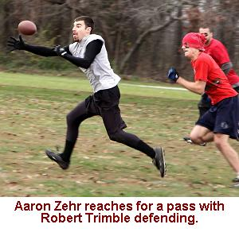
"I can't begin to tell
you how many Cork Bowls have been decided by the last minute of
the first half," remarked Patrick Cork. "The Red Pandas
were getting the ball to start the half so we had to have a one-score
lead heading into the break. The touchdown from Zehr and the stop
on the last play gave us a big lift heading into the locker room."
Willy Truitt continued his torrid
pace in the quarter connecting on 11-of-12 passes for five touchdowns.
Howard struggled with consistency in the quarter, but was effective
getting his team into the endzone connecting on 10-of-20 passes
with 3 touchdowns. He also ran for a pair of scores and threw one
interception. Chris Cork led the way with 4 catches and 2 touchdowns
in the quarter and Robert Trimble had 4 catches and a score as well.
The Blobfish continued to be balanced on offense with all five players
catching at least one pass in the quarter again with Patrick Cork
and Zehr leading the team with three receptions in the quarter.
As was the case for much of the game, the Red Pandas dominated the
time of 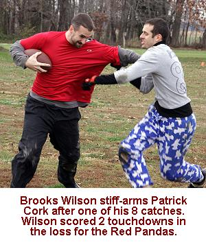 possession
battle holding the ball for nearly 18 of the 25 minutes in the quarter.
They ran 22 plays compared to just 12 for the Blobfish. The Blobfish
were extremely efficient scoring five touchdowns on those 12 plays.
"We went no huddle but
weren't in hurry-up mode," commented quarterback Willy Truitt.
"Our guys were finding open spots and I felt comfortable with
them making plays on their own. I thought the Red Pandas never found
an offensive flow because they spent so much time between plays.
I think that hurt Howard's rhythm throwing the ball. As a long-time
quarterback in this game I know how important it is to get a play
going quickly and keep the defense on its toes. We had time to set
up our defense every play and never really felt uncomfortable on
the defensive side of the ball."
Truitt put together one of the
best halves of his Hall of Fame career completing 25 passes on just
30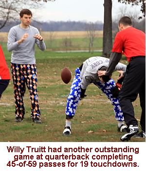
attempts. 11 of those passes resulted in touchdowns and he did not
throw an interception. Howard was 20-for-33 with 8 passing touchdowns
in the first half and the second quarter interception. Trimble and
Cork each had 9 first half receptions for their teams with each
scoring 4 touchdowns as well. Jake Hoalt had a strong first half
for the Blobfish with 6 catches and 4 scores and Chris Cork hauled
in 6 passes for 4 touchdowns for the Red Pandas as well.
After a high-scoring, back and
forth half of football, the third quarter brought the game to a
screeching halt. The Red Pandas started the half with the ball and
quickly moved the ball to the Blobfish four yard line on a pair
of completions. However, as would be the case for much of the game,
the Red Pandas offense struggled inside the five yard line. A pass
for Kevin Ryan was knocked away by Evan Barmes, and then a short
dump off pass to Ryan was completed but he was stopped at the two
yard line short of the endzone. A third down pass to Chris Cork
was thrown into heavy traffic, but Cork had his hands on the pass
but couldn't haul it in forcing a frustrating fourth down play from
the two yard line. Brooks Wilson got lost 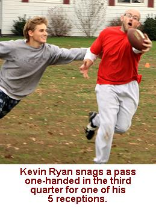 amongst
the defense and was wide open in the corner of the endzone but dropped
the pass from Howard as the Red Pandas turned the ball over on downs.
"We run 6 1/2 minutes off the clock, have a first and goal
situation from the four yard line and can't score," complained
Chris Cork. "That's really unacceptable. I'm not sure what
happened to us, but every time we got close to the east endzone
we had trouble getting the ball across the goal line."
Truitt was unable to connect
on his first two passes putting the pressure back on the Blobfish
with a crucial 3rd and 18, but Truitt hit Patrick Cork cutting across
the middle and Cork dove across the goal line to put the Blobfish
up by two touchdowns for the first time in the game at 84-70 (VIDEO).
The score was the 90th of Cork's career. Trimble answered with an
impressive 38-yard catch and run touchdown on the next possession
for the Red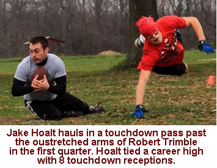
Pandas nearly losing his pants halfway through the play, but managed
to find the endzone anyway to cut the lead to 84-77 (VIDEO).
Truitt, struggling to complete passes for the first time in the
game, found himself in a fourth-and-8 situation just short of midfield.
The Red Pandas brought Trimble on a blitz, but Truitt kept his composure,
rolled to his right and lobbed a pass to a wide open Aaron Zehr
who had released behind the defense, but Zehr bobbled the pass as
he was turning to run and the first turnover on downs for the Blobfish
gave the ball back to the Red Pandas. "That was a huge play
in the game," added Truitt. "We had them in the position
we wanted with them down two possessions. When we didn't score there
I had a feeling we were going to be in for a wild finish."
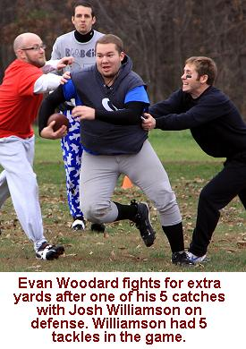 Once
again, the Red Pandas got the ball inside the five yard line on
their first play, but needed all four downs to score as Howard hit
Trimble on a quick crossing route in the front of the endzone on
fourth down to once again tie the score at 84-84 with 8 minutes
to go in the third quarter. On the play, Patrick Cork was shaken
up trying to tackle Trimble as he took a knee to the right hip knocking
him out of the game for several plays. "I got lit up big time,"
recalled Cork. "He was going full speed and drilled me with
his knee going into the endzone. I would have preferred not to have
had to try to tackle him in the open field again the rest of the
game." After a long completion to Evan Barmes, Truitt hit Hoalt
for a 7 yard score to give the Blobfish a 91-84 lead. The Red Pandas
pushed the ball to the 2-yard line as time expired on the third
quarter with them trailing 91-84.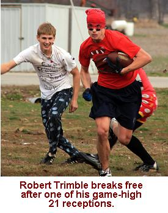
After each team scored at least
35 points in the first two quarters, the two teams were only able
to manage 14 points apiece in the third period. "The pace of
play really slowed down, and a lot of that had to do with the Red
Pandas having the ball the whole quarter," said Evan Woodard.
Again, the Red Pandas held the ball for 18 of the 25 minutes in
the quarter running 17 plays to only 11 for the Blobfish. Truitt
completed just 5 passes in the quarter on 10 attempts with 2 touchdowns.
Howard completed 10 passes for the third straight quarter on 17
attempts, including a pair of touchdowns. Once again, Trimble led
all receivers with 4 catches and a pair of scores in the quarter.
In the third quarter alone the Red Pandas ran nine plays inside
the five yard line. On those nine plays they completed just three
passes for 6 yards and one touchdown. "It seemed like we spent
half the game defending the east endzone," said Willy Truitt.
"They'd complete a couple passes to get close and then we'd
be guarding that endzone for five minutes at the end of every drive."
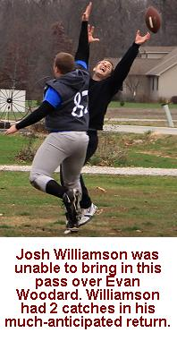 The
Red Pandas pushed the ball across the goal line on the first play
of the 4th quarter to tie the game at 91-91 on a short pass to Wilson.
The Blobfish looked for quick strike, and got it as Jake Hoalt got
behind the defense and Truitt hit him on the deep ball for a 38-yard
score to give the Blobfish the lead again at 98-91 (VIDEO).
The Red Pandas marched down the field with a 5-play drive capped
off by a 13 yard score from Trimble to tie the game at 98-98. Another
third down conversion by Patrick Cork set up a 10 yard score to
Hoalt for a 105-98 advantage, but Trimble answered as he would all
quarter with a length-of-the-field catch and run score to knot the
game at 105-105. Truitt worked the ball down the field with the
"Evans" completing three of his four passes on the next
drive to Woodard and Barmes with Barmes hauling in a 2-yard touchdown
to put the lead back to seven points at 112-105. Trimble broke a
long run down to the two yard line and Howard was able to find Wilson
after one of his patented push-offs for the game-tying score from
two yards out to make the score 112-112.
Truitt connected with Hoalt
for the third time in the fourth quarter for a 26 yard score down
the sideline to give the Blobfish a 119-112 advantage (VIDEO),
but once again Trimble went the length of the field on a controversial
play to tie the game at 119-119 (VIDEO).
Trimble appeared to be tackled by Evan Barmes after a short gain,
but never actually touched the ground. "I saw he never touched
the ground, but it was very similar to a play we had earlier in
the game where we decided the runner's forward progress was stopped,"
said Patrick Cork. "We had a couple guys there that could have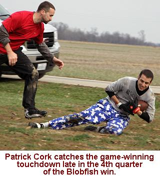
finished him off but they laid off assuming the play was dead. It
was a close play, but in all honesty they were going to score anyway
so it really didn't matter."
With under five minutes to go,
Truitt continued to stay cool under pressure hitting on three straight
passes on the next drive and finding Aaron Zehr in the endzone for
his third score of the game giving the Blobfish a 126-119 advantage
with 3 minutes to play. Howard responded with four consecutive completions
of his own and found Trimble in the corner of the endzone for his
fourth score of the quarter and his record-tying 10th touchdown
of the game with 41 seconds to go. Truitt had a chance to lead his
team on a championship clinching drive and hit Evan Barmes for 24
yards on the first play to put the ball into Red Pandas territory
with under 30 seconds to play. After an incomplete pass, Truitt
looked to his favorite target in the front of the endzone hitting
Patrick Cork for the go-ahead touchdown with just 17 seconds to
play. With the Blobfish leading 133-126, and the Red Pandas having
two timeouts remaning, they would have time for three more plays
to try to tie the game and send the game to overtime.
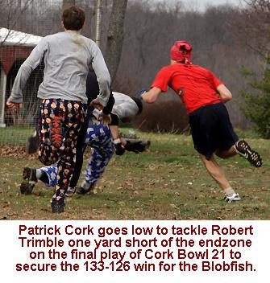 Howard
connected with Trimble on a short completion but Evan Barmes made
a solid open field tackle for just an 8 yard gain on first down.
Howard was unable to find a receiver on second down and threw the
ball away with 3 seconds left and setting up one final play. After
double-teaming Trimble for nearly the entire game, the Blobfish
put Hoalt on him by himself and moved Patrick Cork to deep safety
for the first time in the game. The move would pay off. Howard looked
for Trimble over the middle for a short completion but Trimble was
able to spin away from Barmes and Hoalt and had open field ahead
of him. With Josh Williamson leading the way, Trimble made a move
toward the sideline but Cork made a desperate dive at Trimble's
legs upending him. When Trimble came down, he fell one yard short
of the endzone and the Blobfish had escaped with a 133-126 victory.
(VIDEO)"I
felt comfortable being deep safety for a potential hail-mary pass
and thought I'd have a good chance to knock one down," recalled
Cork. "But I'm nowhere near the best tackler on our team so
the last thing I was thinking of was having to make a tackle in
the open field - especially against Trimble. I made a guess on where
he would go and got just enough of him to knock him off his feet.
If we ran that same scenario 10 times he probably scores the other
9 times. What a way to end a game." The play kept Trimble from
breaking the single-game record for touchdowns in a game, having
to settle for a tie with 10. It also prevented the first overtime
in Cork Bowl history - something that all players have had nightmares
about since they started playing. "I think 100 minutes is plenty,"
remarked Chris Cork. "In all honesty, 15 minutes is enough.
Having to play more than that is something I don't think any of
us really want to ever happen."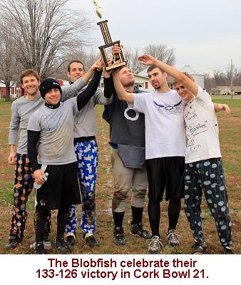
Trimble dominated the fourth
quarter of play catching 8 passes and scoring 4 touchdowns. The
rest of the Red Pandas combined for 6 receptions and 2 touchdowns
in the quarter. Howard connected on 14-of-19 passes for 6 scores
in the period - with the vast majority of those going to Trimble.
After just five completions in the third quarter, Willy Truitt was
red-hot in the final frame hitting 15 of 19 for six more scores.
Every player on the Blobfish had at least two catches in the final
period - the third quarter of the game in which all five receivers
caught at least one pass. Cork had 4 with one touchdown, Hoalt had
3 catches and scored on all 3, Barmes and Zehr each had 3 receptions
and a score and Wooard had a pair of catches. "Our team seemed
a lot fresher in the fourth quarter," said Truitt. "All
of our guys were able to take advantage of their matchups at one
time or another and I had complete confidence in all five of them
to look their way at any point. Everyone said we were young and
inexperienced, but our guys made a bunch of championship plays in
that final quarter."
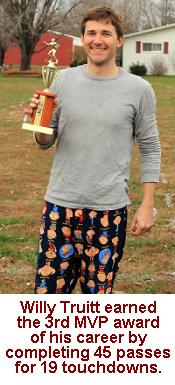 In
a highly contested MVP race, Willy Truitt narrowly beat out teammates
Patrick Cork and Jake Hoalt, as well as Red Pandas receiver Robert
Trimble to secure his third MVP award. It was Truitt's first un-shared
MVP award as he was also the co-MVP in Cork Bowls 10 and 19. After
playing receiver last year in Cork Bowl 20, Truitt returned to the
spot that has made him famous over the years. He set a new record
for completion percentage in a game hitting on 45-of-59 passes (76%).
19 of those completions went for scores, and once again he did not
throw an interception in the game. Dating back to Cork Bowl 19,
Truitt has gone 126 consecutive attempts without an interception,
and has thrown just one interception in his last 267 attempts dating
back to the second quarter of Cork Bowl 16. "Needless to say,
that's one of the most amazing stretches of quarterback play at
any level of football," praised teammate Patrick Cork. "His
touchdown to interception ratio over the past three and a half games
is 68-to-1. That's unprecedented."
Patrick Cork led the way for
the balanced Blobfish attack with 14 catches and 6 touchdowns including
five receptions on 3rd or 4th down. "It had been too long since
Patrick and I had been together," remarked Truitt. "We
connected on some easy routes early, then before I knew it, he's
laying out for that patented 'Out' play he's become famous for.
The cheer from the fans for that one play alone was amazing. It
tells me the fans have been paying attention for years, and that
is the Patrick Cork they remember. We saw flashes of that this year,
and he led our team in receiving. I was very happy about that."
Jake Hoalt hauled in 12 passes and tied his career-high with 8 touchdowns.
Aaron Zehr set new career highs with 8 catches and 3 touchdowns.
Evan Barmes set a new career high with 6 catches (1 touchdown) and
Evan Woodard had 5 receptions with 1 touchdown. For the Red Pandas,
Trimble was unstoppable despite a multitude of double-teams from
the Blobfish. He finished with a career-high 21 receptions and tied
the single-game record with 10 touchdowns. He also had a record-breaking
434 yards on the day (since the yardage numbers began in Cork Bowl
15, no player had gained more than 308 yards in a game). He had
six touchdown receptions that went the entire 38 yard length of
the field and scored 6 of his team's final 8 touchdowns in the game.
No other Red Pandas reached double digits in receptions. Chris Cork
had 8 catches and scored 4 times while Brooks Wilson scored twice
on his 8 catches. Kevin Ryan hauled in five passes and Josh Williamson
had 2 catches with neither finding the endzone. Greg Howard has
a nearly identical game as he did last year in his debut, with the
exception being just one interception. He completed 44 passes on
69 attempts for 16 touchdowns. He also added a pair of rushing touchdowns
in the second quarter.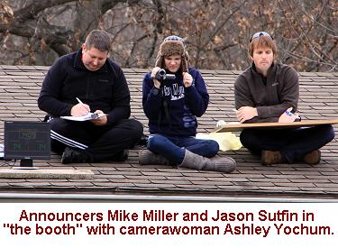
Defensively, Trimble led all
players with 12 tackles. Wilson and Williamson each had 5 tackles,
Howard had 3, Chris Cork had 2 and Kevin Ryan had 1. Cork also had
a forced fumble and fumble recovery in the second quarter. Patrick
Cork led the Blobfish with 10 tackles and picked off a pass - the
13th of his career. Jake Hoalt had 7 tackles, Evan Barmes 4, Aaron
Zehr 3, Willy Truitt 2 and Evan Woodard 2.
With the return of the blitz
(allowed one time per possession), the assumption was there would
be a variety of blitz attempts in the game. However, the two teams
only combined to rush the passer five times in the game with no
sacks being recorded. The time of possession battle was amazingly
lopsided with the Red Pandas controlling the ball for 65 of the
100 minutes. Even more amazingly, the Red Pandas scored length-of-the-field
touchdowns 8 times in the game. If not for those quick strike scores,
the time of possession likely would have been closer to 70-30. Part
of that was due to the no-huddle offense run most of the game by
the Blobfish, but lack of execution inside the five yard line also
played a part. The Red Pandas ran 16 plays inside the five yard
line in the game, scoring on just four of them. "We only got
one interception, from Patrick, and quite frankly, I thought we'd
haul in three or more," said Truitt. "We had a few close
calls, but couldn't haul in another one. Overall, we did what we
had to on defense. We made 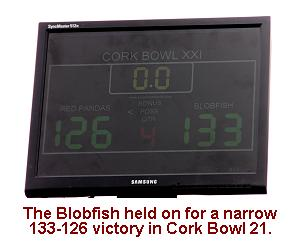 them
work for it, they had to execute a lot of 3rd and 4th downs. That's
all you can ask for in Cork Bowl. Those can go either way, and usually
when a quarterback has his back against the wall, that's when you
see some turnovers. We didn't get those breaks, but we set it up
good." For the game, the Red Pandas ran 19 plays on third or
fourth downs compared to only 11 for the Blobfish.
After debuting four rookies
last year, there were no newbies in Cork Bowl 21. However, the Blobfish
played with the only two second-year players in Aaron Zehr and Evan
Barmes. The Blobfish were confident coming in, but many around the
league doubted they could win with such a young team. "I was
really impressed with both Zehr and Barmes," remarked Willy
Truitt. "Barmes was able to get open, catch the ball and move
it upfield. Zehr is a lot like Jeff Henney. He didn't bust on to
the scene like Henney, but that's probably because we didn't lean
on him right away, or put in a spot defensively to make that splash.
That said, he held his own when he was guarding Trimble. On the
offensive side, he is learning how to go get that ball. He has great
hands, and now that he has a few Cork Bowls under his belt, I wouldn't
be surprised to see him challenge for MVP next year. I hope to play
with him again next year and build on the momentum from this year."
Once again, there were no immediate
retirement announcements following the game from any of the veterans.
News of a potential Jeff Henney return next fall could send shockwaves
through the league and a major shake-up in the rosters. "We'll
cross that bridge when we get there," deflected Commissioner
Patrick Cork. "There are always some unexpected things that
come up each fall so we'll have to see how things play out over
the next 11 months."
Cork Bowl 21 Game Notes:
Robert Trimble moved from
9th in receptions and 10th in career touchdowns up to 6th place
all-time with his record setting performance...Greg Howard moved
into 6th place all-time in completions and 5th in touchdown passes....With
10 tackles, Patrick Cork passed Reggie Truitt to move into second
place all-time and also moved into a tie with Truitt for the lead
in career interceptions with 13....Patrick Cork caught his 90th
touchdown pass of his career and brother Chris caught his 70th touchdown
in the game.....Willy Truitt has gone 126 attempts without an interception
and has just one interception in his last 267 attempts.....Kevin
Ryan and Josh Williamson were held without a touchdown for the first
time in their careers....Brooks Wilson failed to reach double-digits
in receptions for the first time since he returned to the field
in Cork Bowl 13.....Willy Truitt has more career completions (529)
than the second and third all-time passers combined (508)....
(Click Here for More Pictures!)
For all pictures from the game visit Cork Bowl
21's Picasa/Google Image Center
Back to top
Cork Bowl 21 Stats
Back to Cork Bowl |